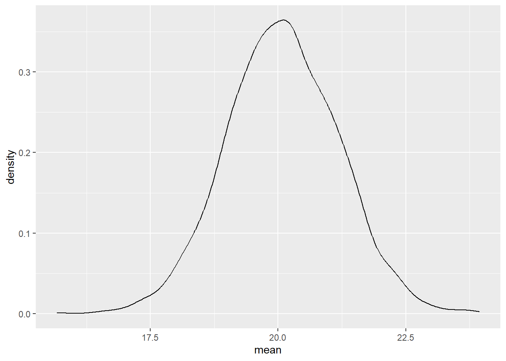
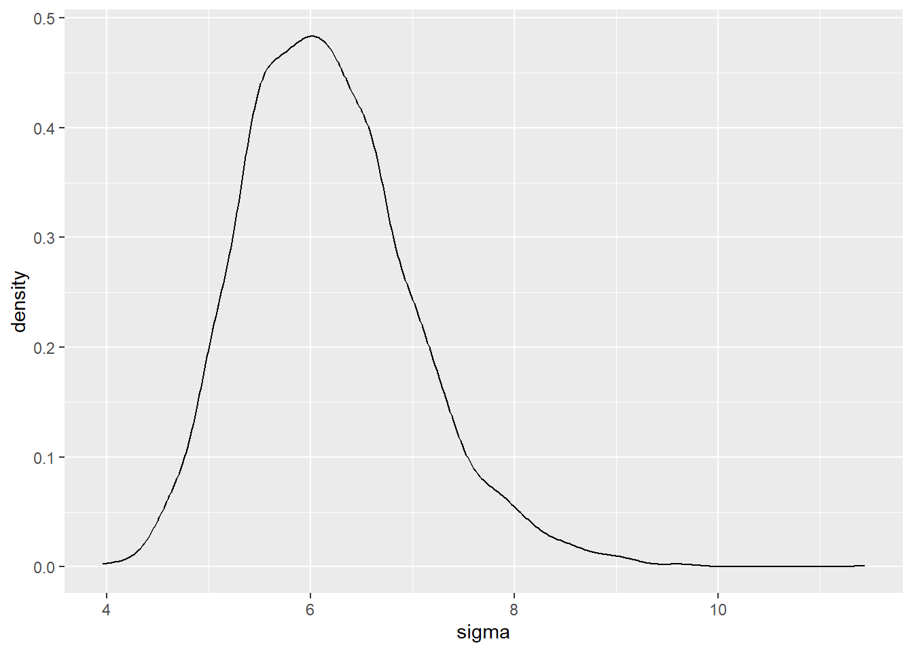

set.seed(42)
m1 <- stan_glm(mpg ~ 1, data = mtcars, refresh = 0)Gauss-Modelle
Aufgabe 1
Nehmen Sie für folgende Aufgaben den Datensatz mtcars aus dem tidyverse.
Aufgabe 1 a)
Stellen Sie ein generalisiertes lineares Modell auf, das zeigt, welchen mittleren Spritverbrauch wir zu erwarten haben.
Aufgabe 1 b)
Geben Sie das Modell als Tabelle aus und visualisieren Sie die Verteilungen für den durchschnittlichen Spritverbrauch und die Streuung.
m1tab <-
m1%>%
as_tibble()%>%
rename(mean = `(Intercept)`) #Optionale Umbenennung der Spalte (Intercept)ggplot(m1tab, mapping = aes(x = mean))+
geom_density()
ggplot(m1tab, mapping = aes( x = sigma))+
geom_density()
Aufgabe 1 c)
Geben Sie die Wahrscheinlichkeit dafür, dass der mittlere Spritverbrauch nicht größer ist als 21 mpg.
m1tab%>%
count(mean <= 21)%>%
mutate(Anteil = n / sum(n))# A tibble: 2 x 3
`mean <= 21` n Anteil
<lgl> <int> <dbl>
1 FALSE 818 0.204
2 TRUE 3182 0.796Oder eleganter:
m1tab %>%
summarise(Anteil = mean(mean <= 21))# A tibble: 1 x 1
Anteil
<dbl>
1 0.796Die Wahrscheinlichkeit, dass der mittlere Spritverbrauch nicht größer ist als 21 mpg, liegt bei ca. 80 Prozent.
Aufgabe 1 d)
Welche Streuung wird mit einer Wahrscheinlichkeit von 90 Prozent nicht überschritten?
m1tab%>%
summarise(quant90 = quantile(sigma, prob = .9))# A tibble: 1 x 1
quant90
<dbl>
1 7.25Eine Streuung von 7.25 wird mit einer Wahrscheinlichkeit von 90 Prozent nicht überschritten.
Aufgabe 1 e)
Wie breit ist das Intervall der höchsten Dichte, das angibt in welchem Bereich sich 90 Prozent der möglichen Durchschnittsverbrauche befinden?
m1tab%>%
select(mean)%>%
hdi(ci = .9)Highest Density Interval
Parameter | 90% HDI
--------------------------
mean | [18.23, 21.81]21.81 - 18.23[1] 3.58Oder eleganter:
m1tab%>%
select(mean)%>%
hdi(ci = .9) %>%
mutate(width = CI_high - CI_low) %>%
select(width)Highest Density Interval: 3.58Die Breite des 90-Prozent-HDIs beträgt 3.58.
Aufgabe 2
Laden Sie den Datensatz “HousePrices” aus dem gegebenen Archiv:
https://vincentarelbundock.github.io/Rdatasets/datasets.html
Stellen Sie ein Modell auf, das zeigt mit welchem Mittelwert und welcher Streuung im Preis der Häuser zu rechnen ist.
HousePrices <-
read.csv("https://vincentarelbundock.github.io/Rdatasets/csv/AER/HousePrices.csv")set.seed(42)
m2 <-
stan_glm(price ~ 1, data = HousePrices, refresh = 0)m2tab <-
m2%>%
as_tibble()%>%
rename(mean = `(Intercept)`)Aufgabe 2 b)
Wie groß ist die Wahrscheinlichkeit, dass der durchschnittliche Häuserpreis mehr als 70.000 Dollar ist?
m2tab%>%
count(mean > 70000)%>%
mutate(Anteil = n / sum(n))# A tibble: 2 x 3
`mean > 70000` n Anteil
<lgl> <int> <dbl>
1 FALSE 3802 0.950
2 TRUE 198 0.0495Oder eleganter:
m2tab %>%
summarise(Anteil = mean(mean > 70000))# A tibble: 1 x 1
Anteil
<dbl>
1 0.0495Die Wahrscheinlichkeit, dass der mittlere Häuserpreis bei mehr als 70.000 Dollar liegt, ist laut dem Modell lediglich 5 Prozent.
Aufgabe 2 c)
Wie groß ist die Wahrscheinlichkeit, dass die Streuung der Häuserpreise bei 20.000 Dollar oder weniger liegt?
m2tab%>%
count(sigma <= 20000)%>%
mutate(Anteil = n / sum(n))# A tibble: 1 x 3
`sigma <= 20000` n Anteil
<lgl> <int> <dbl>
1 FALSE 4000 1Oder eleganter:
m2tab %>%
summarise(Anteil = mean(sigma <= 20000))# A tibble: 1 x 1
Anteil
<dbl>
1 0Die Wahrscheinlichkeit, dass Streuung kleiner oder gleich 20000 Dollar ist, liegt laut dem Modell bei 0 Prozent.
Aufgabe 2 e)
Zwischen welchen Häuserpreisen befindet sich das mittlere Intervall, dass 90 Prozent der möglichen Durchschnittspreise umfasst?
m2tab%>%
select(mean)%>%
eti(ci = .90)Equal-Tailed Interval
Parameter | 90% ETI
--------------------------------
mean | [66295.10, 69988.95]Laut dem Modell werden die Grenzen des 90-Prozent-ETIs durch die Werte 66295.10 und 69988.95 gebildet.
Codesammlung
Tipps für eine Codesammlung
Generalisiertes lineares Modell aufstellen für den mittleren Wert der AV:
m <- stan_glm(AV ~ 1, data = data, refresh = 0)Modell als Tabelle ausgeben:
mtab <-
m1%>%
as_tibble()%>%
rename(mean = `(Intercept)`)Streuung & Mittelwert des Modells visualiseren
ggplot(mtab, mapping = aes(x = mean))+
geom_density()
ggplot(mtab, mapping = aes( x = sigma))+
geom_density()Wie groß ist die Wahrscheinlichkeit dafür, dass der mittlere Werte der Av nicht größer ist als X
mtab%>%
count(mean <= X)%>%
mutate(Anteil = n / sum(n))
#ODER
mtab %>%
summarise(Anteil = mean(mean <= X))Welche Streuung wird mit einer Wahrscheinlichkeit von X Prozent nicht überschritten?
mtab%>%
summarise(quantX = quantile(sigma, prob = .X))Wie groß ist die Wahrscheinlichkeit, dass die Streuung der AV bei X oder weniger liegt?
mtab%>%
count(sigma <= X)%>%
mutate(Anteil = n / sum(n))
#ODER
mtab %>%
summarise(Anteil = mean(sigma <= X))